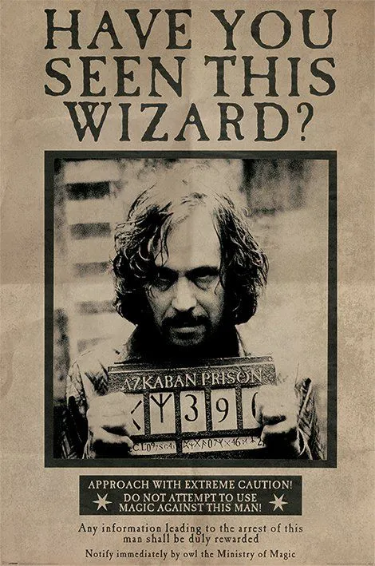
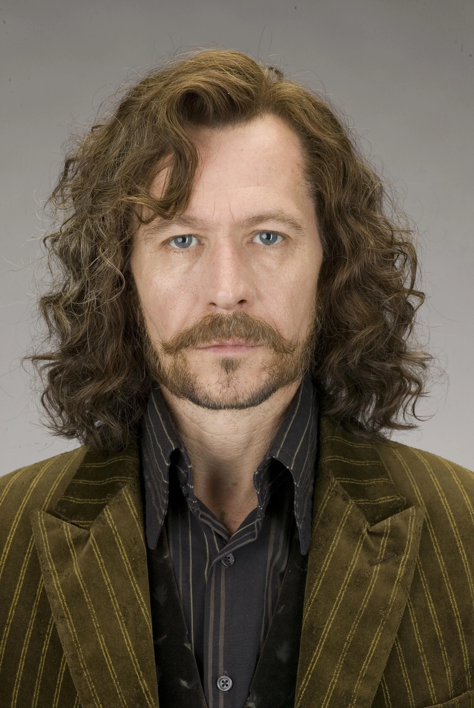
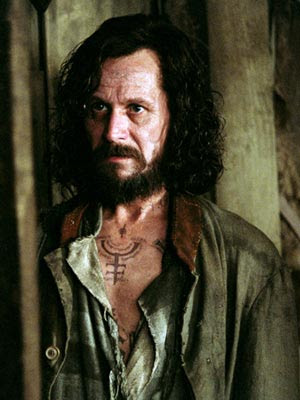

Sirius Black is the last heir of the House of Black, a once notable pure-blood wizarding family. His parents, Orion and Walburga Black, were both Blacks by birth and second cousins. Sirius had a younger brother, Regulus Arcturus Black, and three older cousins: Bellatrix Lestrange, Andromeda Tonks (his favorite cousin and mother of Nymphadora Tonks), and Narcissa Malfoy (mother of Draco Malfoy). In line with the Black family tradition of naming children after stars and constellations, Sirius was named after the Dog Star. Sirius's early life proved unhappy; he had come to hate most of his relatives, in particular his mother. He rejected his family's pure-blood elitism and reverence for the Dark Arts. At Hogwarts, rather than be sorted into Slytherin like the rest of his family, Sirius was placed in Gryffindor.
In contrast to his home life, Sirius greatly enjoyed life at Hogwarts, where he was inseparable from his best friend, James Potter. Sirius and James were immensely popular and known for their exceptionally good looks. Students liked his biting humour, and teachers respected his intelligence, though not his behaviour. His popularity was not universal, as a mutual hatred sprang up between James and Severus Snape. Sirius actively supported James, leading to Snape developing an equal and lifelong loathing of Sirius. Sirius and James often went out of their way to bully Snape, whom they despised for his great interest in the Dark Arts. They also became best friends with Peter Pettigrew and Remus Lupin, whom they later discovered was a werewolf. To support Lupin, Sirius, James, and Peter secretly became Animagi, which allowed them to safely accompany Lupin during his transformations and keep him under control. Sirius's form is that of a huge black dog, from which his nickname Padfoot was derived.
Sirius left home at the age of sixteen and took refuge with James and his parents. His outraged mother burned his name off the family tree. Sirius' Uncle Alphard left him a large inheritance, causing Sirius' mother to also remove Alphard's name. He was left financially independent by his uncle's generous bequest. After leaving school, Sirius fought against Voldemort, eventually joining the Order of the Phoenix. He remained close friends with James and eventually attended James and Lily Evans' (now Lily Potter) wedding as their best man. When their son, Harry, was born, Lily and James named Sirius as Harry's godfather.
  